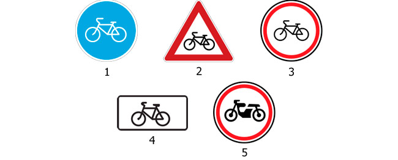
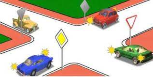
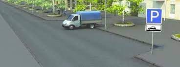
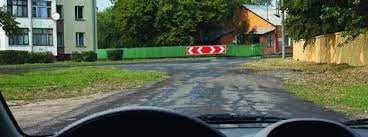
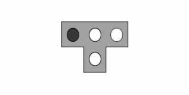
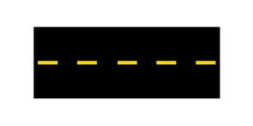
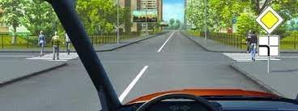
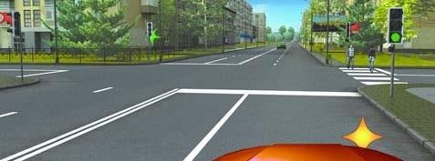
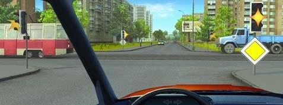

Թեստ 39
30:00
1. «Ճանապարհային երթևեկության անվտանգության ապահովման մասին» ՀՀ օրենքի համաձայն` տրանսպորտային միջոցներ վարելու իրավունքը ծագում է`
2. Երթևեկության սկիզբ է համարվում
3. Տրանսպորտային միջոցների շահագործումն արգելվում է, եթե`
4. Տրանսպորտային միջոցների շահագործումն արգելվում է, եթե
5. Բոլոր ճանապարհներին միևնույն ուղղությամբ երթևեկության 3 և ավելի գոտիների առկայության դեպքում ձախ եզրային գոտի զբաղեցնել թույլատրվու՞մ է արդյոք ընդհանուր օգտագործման տրանսպորտային միջոցներին:
6. Նշաններից ո՞րն է կոչվում «Հատում հեծանվային արահետի հետ»:

7. Խաչմերուկն առաջինը կանցնի`

8. Թույլատրվո՞ւմ է վարորդին այս իրավիճակում աջ շրջադարձ կատարել
9. Խախտել է արդյո՞ք կայանման կանոնները բեռնատարի վարորդը

10. Այս նշանը

11. Այս լուսացույցն արգելում է երթևեկությունը`

12. Ճանապարհային նշաններից որի՞ հետ կարող է կիրառվել դեղին գույնի ընդհատվող գծանշումը:

13. Կոշտ կամ ճկուն կցիչով քարշակման ժամանակ նշվածներից ո՞ր դեպքում է թույլատրվում մարդկանց փոխադրումը քարշակվող ավտոմոբիլում։
14. Շրջադարձի լուսային ցուցիչի բացակայության կամ անսարքության դեպքում ձեռքով տրվող նախազգուշացնող ազդանշանը դադարեցվում է`
15. Հետիոտներին չխոչընդոտել վարորդը պարտավոր է

16. Աջ շրջադարձ կատարելիս պետք է

17. Ազդանշան տալը երթևեկության մյուս մասնակիցների նկատմամբ առավելություն
18. Պարեկային ծառայության ավտոմոբիլի վարորդը երթևեկության այլ մասնակիցների նկատմամբ առավելություն ստանալու համար պետք է միացնի`
19. Խաչմերուկն անցնելիս այս իրավիճակում
